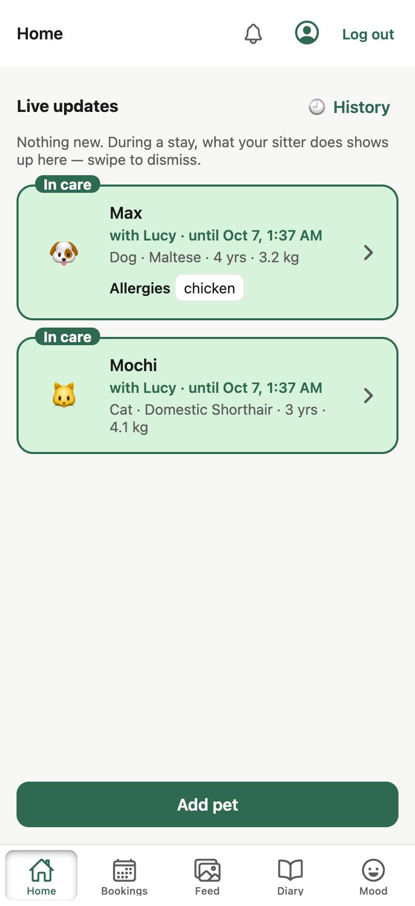
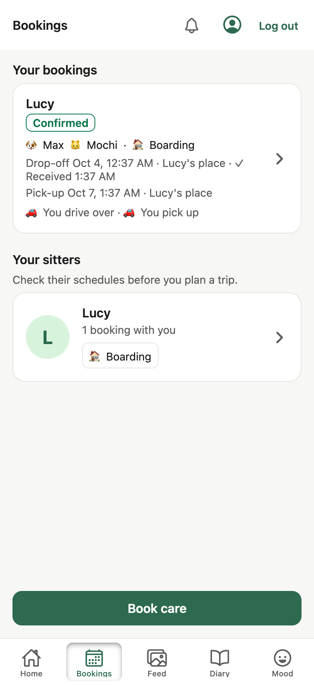
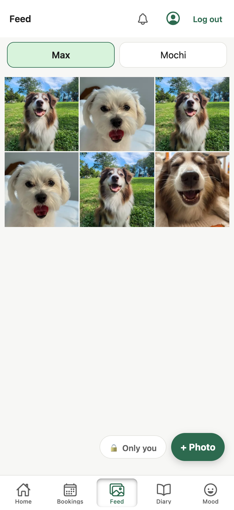
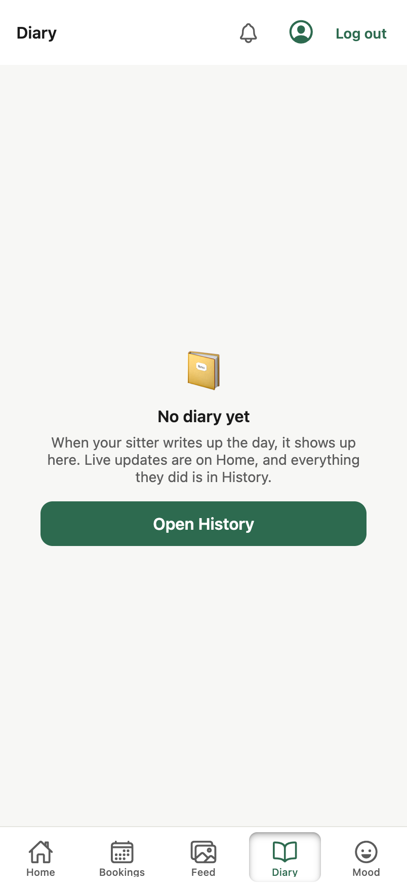
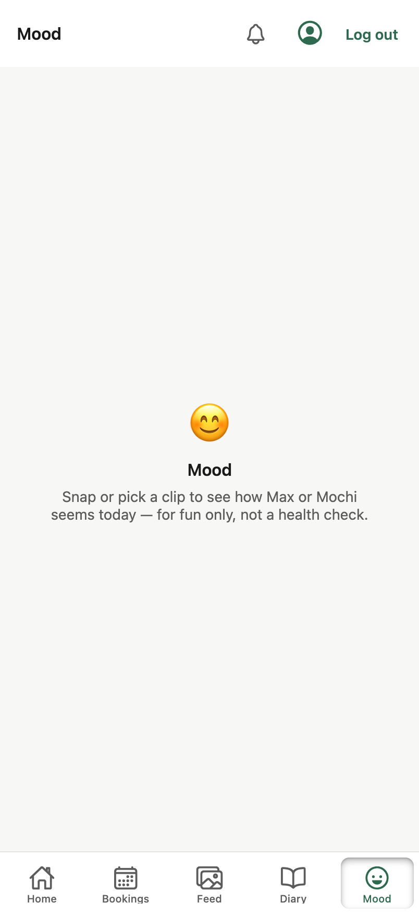
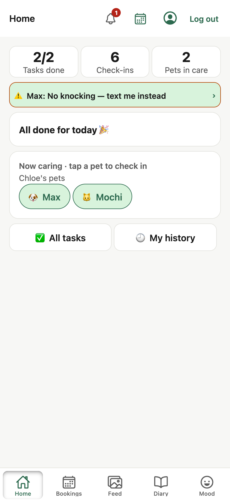

Draft for Minsik. Same tabs and the same data as the live app (D47: Home · Bookings · Feed · Diary · Mood; demo Chloe, Lucy, Max, Mochi). The right-hand phone uses only our tokens and components, so every change maps to something already in frontend/components/ui, PR #41 or the Figma library.

Card Progress Bar Avatar Heads-up Tag Button (pinned via Screen footer) Icon Button
Segmented Control Stage Card (compact) Quote Card line Profile Card Button
Filter Chip Feed Card Photo Tile Button
Daily Note Suggestion Chip Notification Row-style timeline Card
Filter Chip Card Button (secondary)
Task Row (Next) Heads-up Tag Filter Chip Progress Bar Button (secondary)